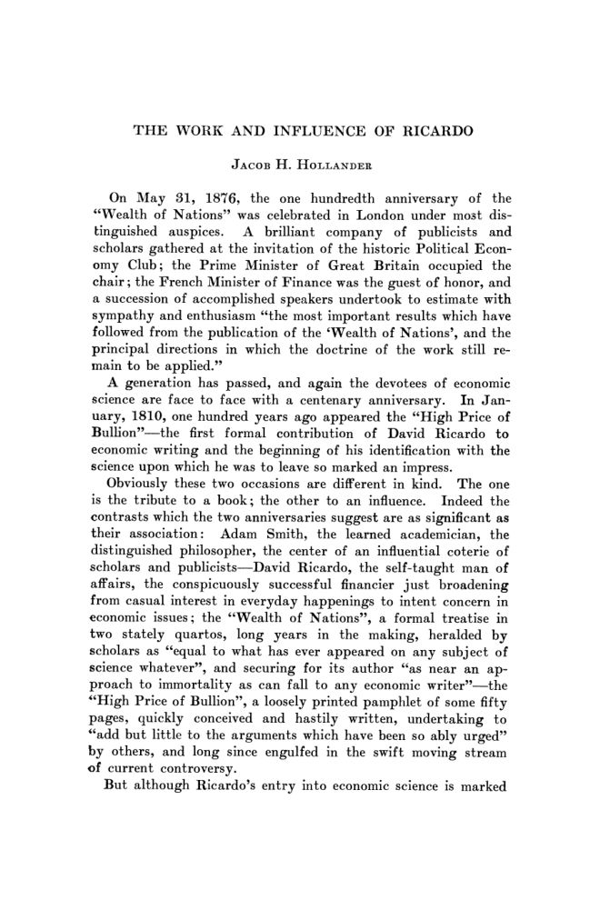

Hollander e Bonar, 1910: o que restou de Ricardo em cem anos?
Leitura: 8 min
No centenário de The High Price of Bullion, Hollander atribui a Ricardo o método da economia como ciência dedutiva, e Bonar o lê como o pensador das proporções, da moeda ao comércio exterior.


Jacob H. Hollander começa por outro aniversário. Em 31 de maio de 1876, o Political Economy Club reuniu em Londres publicistas e estudiosos para celebrar o centenário da Riqueza das Nações. O primeiro-ministro britânico presidiu a sessão e o ministro das Finanças da França foi o convidado de honra. Uma geração depois, os economistas estavam diante de outro centenário, mas de natureza diferente.
Em 1876 se celebrara um livro, um tratado em dois volumes in-quarto, anos em preparação. Em 1910 se celebrava uma influência. The High Price of Bullion, a primeira contribuição formal de David Ricardo, era um folheto de umas cinquenta páginas, escrito às pressas e engolido pela polêmica do momento. O contraste valia para os autores: o acadêmico e filósofo de um lado; do outro, o autodidata e financista bem-sucedido que passava do interesse casual pelos fatos do dia ao estudo da economia.
Por que Ricardo pesou tanto?
Para Hollander, a explicação começa nas condições inglesas. A partir de 1797, ano da restrição dos pagamentos do Banco da Inglaterra, a questão deixou de ser quanto a nação produzia e passou a ser como o acréscimo anual da riqueza se repartia entre as classes. O Parlamento precisava decidir sobre o Banco, as leis do trigo e os impostos, e cada decisão favorecia devedores ou credores, agricultores ou fabricantes, consumidores ou proprietários. A teoria da distribuição tornou-se o centro do debate.
A segunda explicação é o feitio intelectual. Ricardo conseguia olhar um fenômeno complexo, isolar um elemento primário e seguir seu curso até o fim, livre das forças contrárias. Hollander vê nessa capacidade a origem tanto do êxito no mercado financeiro, em plena convulsão das guerras napoleônicas, quanto da análise econômica. A terceira é a atividade dos discípulos, sobretudo J. R. McCulloch, que escreveu os artigos de economia do Scotsman de 1817 a 1827, resenhou para a Edinburgh Review por vinte anos e, segundo Hollander, foi por duas gerações o guardião da consciência econômica inglesa.
Que doutrinas ficaram?
Na moeda, Ricardo mostrou que a lei de Gresham só opera com excesso agregado de meio circulante, o que fundamenta as moedas com lastro em câmbio-ouro dos Estados modernos. Fez da distribuição territorial dos metais preciosos a base da teoria do nível internacional de preços e do câmbio. A separação entre as funções de emissão e de desconto, proposta em 1816 e retomada no Plan for a National Bank, de 1823, seria realizada no Bank Act de 1844.
Na tributação, devem-se a Ricardo dois critérios: a utilidade social de um imposto se mede por sua incidência final, e não por sua arrecadação, e essa incidência pode ser rastreada cientificamente pelas leis da distribuição. No comércio internacional, a teoria deixada por Ricardo e exposta por Mill tornou-se a base científica do livre-comércio, nas palavras de Cairnes e de Bastable citadas por Hollander.
Hollander rejeita a tese de que Ricardo seria o pai do radicalismo do século XIX. O trabalho incorporado era, para ele, medida do valor, e não sua causa, e Ricardo chegou a admitir que só havia medidas imperfeitas. A alta da renda da terra era sinal de riqueza, e não de injustiça. Ricardo apoiou a educação lancasteriana e as caixas econômicas, mas era individualista, respeitava os direitos adquiridos e defendia a redução gradual, e não imediata, dos direitos sobre o trigo.
“a contribuição efetiva de Ricardo à ciência econômica não foi de conteúdo, mas de método” (“the effective contribution of Ricardo to economic science was not content but method”)
É a tese central. A Riqueza das Nações, diz Hollander, deve sua excelência a uma combinação de informação útil e argumento de bom senso, e não a um plano lógico. Ricardo definiu o campo com precisão e o cultivou com espírito científico: supôs forças definidas e derivou seus efeitos últimos, testando as conclusões nos fatos da época. Daí em diante, a economia passou a aspirar a ser a análise de um objeto definido por um método conscientemente lógico.
O que Bonar acrescentou?
James Bonar parte do caso que lançou Ricardo. Nos três primeiros meses de 1810, o ouro em barra custava £4 10s. a onça em papel-moeda, contra o preço da Casa da Moeda de £3 17s. 10½d. As cartas de Ricardo ao Morning Chronicle, de 1809, diziam que a depreciação das notas era evidente e que o excesso de emissão era sua causa; as notas supérfluas não podiam voltar ao banco, porque a conversibilidade estava suspensa desde 1797.
Para Bonar, a ideia de Ricardo é que cada nação precisa de uma quantidade definida de moeda, proporcional ao seu comércio e ao dos outros países. Toda perturbação dessa proporção provoca um fluxo de metais. A regra vale também entre províncias de um mesmo país, e é ela que mantém uma nota de banco do interior com o mesmo valor de uma nota do Banco da Inglaterra. Da teoria do equilíbrio monetário local, Ricardo teria derivado a teoria geral do comércio internacional.
“os ‘equilíbrios’ de Ricardo são sempre os do mar” (“Ricardo's ‘equilibria’ are always those of the sea”)
O mar nunca está calmo, mas tende sempre a ficar. A categoria favorita de Ricardo, para Bonar, é a proporção: a renda é uma proporção do produto, o valor depende da proporção de trabalho, os lucros variam na proporção inversa dos salários. O custo comparativo, que os sucessores levaram ao primeiro plano, aparece em Ricardo numa nota de rodapé. Seu êxito, conclui Bonar, foi mais de método que de resultados: não se ensina moeda, renda ou tributação sem ele, mas nenhuma escola aceitaria suas doutrinas como ele as escreveu.
Como reagiu o debate?
Alvin S. Johnson abriu dizendo que, num sentido, todos eram ricardianos. O sistema clássico servia para problemas de proporções, como comércio, moeda e impostos; para a distribuição em quantidades absolutas, os teóricos psicológicos representavam uma corrente nova, e não um afluente menor. Lewis H. Haney atribuiu as falhas de Ricardo menos ao método dedutivo do que a uma filosofia materialista e duvidou que proporção dispense quantidade.
H. C. Taylor atacou a fórmula da renda. Ela supõe que todos os agricultores em concorrência tenham a mesma produtividade; se um obtém US$ 20 a mais por unidade de trabalho e capital na terra melhor e outro só US$ 10, a renda de mercado sai da concorrência entre homens desiguais, e não da diferença de fertilidade. Taylor propôs abandonar a fórmula exata e conservar a análise de Ricardo sobre as forças que elevam e reduzem a renda.
Na minha leitura
Na minha leitura, as duas comunicações convergem num ponto que define a economia desde então: isolar uma força, supor o resto constante e seguir as consequências até o fim. Bonar resume bem o risco, ao dizer que os defeitos de Ricardo estão quase sempre nas premissas, e não no raciocínio. O método é poderoso justamente porque expõe as hipóteses; o trabalho de quem vem depois é testá-las.
A crítica de Taylor é um exemplo do que o próprio método permite. Ao trocar a hipótese de agricultores iguais pela de agricultores desiguais, a fórmula quantitativa da renda deixa de valer, mas a direção dos efeitos se mantém: crescimento da população eleva a renda, melhorias agrícolas a reduzem. É a distinção entre o resultado qualitativo de um modelo, que costuma sobreviver, e o número que ele promete, que depende das premissas.
Glossário
- Restrição de 1797
- suspensão, pelo governo britânico, da conversibilidade das notas do Banco da Inglaterra em ouro, que durou até depois das guerras napoleônicas.
- Bullion Committee
- comissão da Câmara dos Comuns que, em 1810, atribuiu a alta do ouro ao excesso de emissão de notas.
- Lei de Gresham
- princípio de que a moeda depreciada expulsa de circulação a moeda boa.
- Renda diferencial
- pagamento pelo uso das terras melhores, medido pela vantagem sobre a terra marginal, que não paga renda.
- Custo comparativo
- princípio de que um país ganha ao se especializar onde sua vantagem relativa é maior, ainda que seja mais eficiente em tudo.
- Incidência
- quem suporta de fato o ônus final de um imposto.
- Bank Act de 1844
- lei britânica que separou no Banco da Inglaterra o departamento de emissão do bancário.
- Teóricos psicológicos
- economistas que explicavam o valor pela utilidade marginal, como Jevons, em oposição à tradição clássica.
Fontes
- The Work and Influence of Ricardo; Where Ricardo Succeeded and Where He Failed; The Ricardo Centenary: Discussion — Jacob H. Hollander e James Bonar; debatedores Alvin S. Johnson, Lewis H. Haney e H. C. Taylor (pp. 71–109). JSTOR · Internet Archive (PDF)
- Edição completa, com os demais artigos: Nº 113 do Arquivo.
Documento em domínio público (EUA, publicado antes de 1931), via JSTOR Early Journal Content e Internet Archive. Resumo e comentário do autor deste site, sem afiliação com a American Economic Association. Encontrou um erro? Escreva: a correção é publicada no próprio texto, com data.
← Laughlin × Fisher, 1910: quem empurrou os preços para cima? ↑ Nº 113 · St. Louis, 1910: preços desde 1896, Ricardo aos cem anos e educação